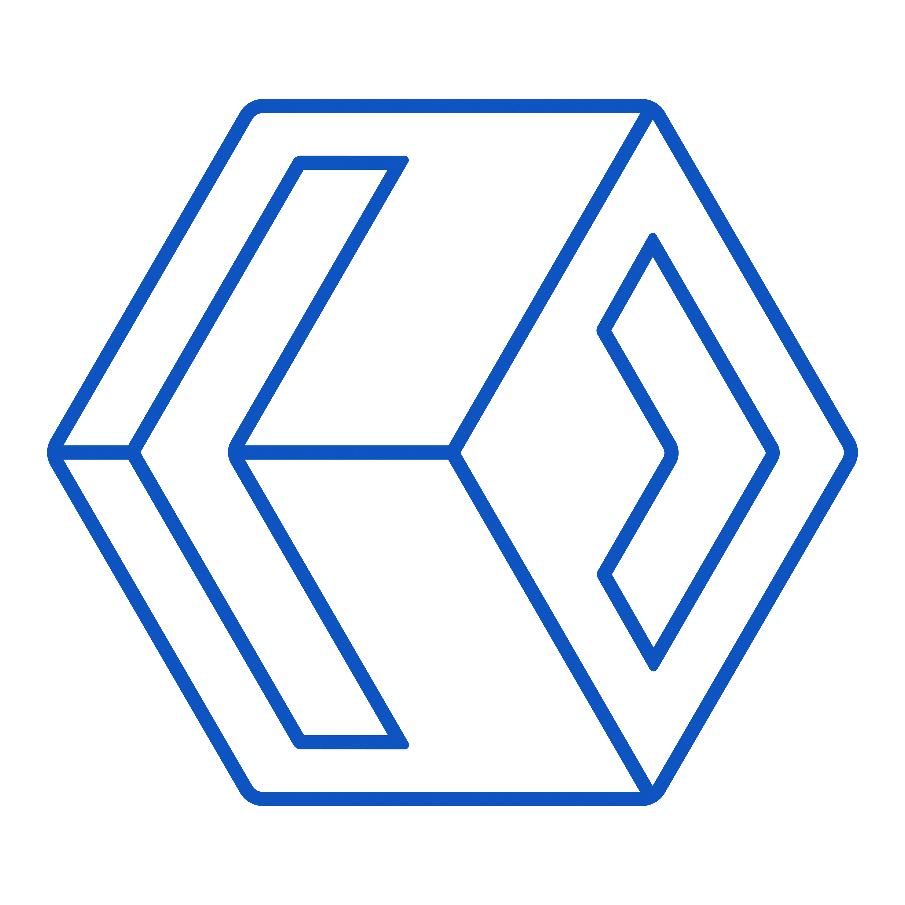
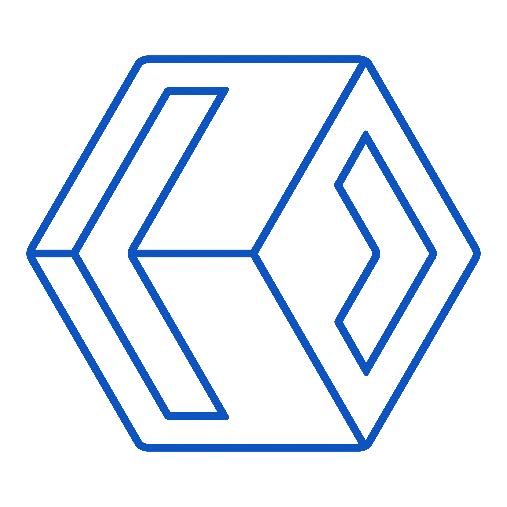

Type de projet : Projet scolaire
Langages : C#, XAML
Outil(s) : Visual Studio
Travail en solo
Objectif : Réaliser un jeu du Démineur à notre manière en C# et en XAML avec Visual Studio.
Ce projet a duré 3 semaines et m’a pris environ une douzaine d’heures de travail, car c’était un langage que je ne connaissais pas auparavant.
Il m’a permis de revoir les fonctions récursives que j’avais déjà étudiées en Python, notamment pour la révélation des cases lorsqu’il y a des cases vides autour de celle qui a été cliquée.
J’ai personnalisé mon Démineur en ajoutant des couleurs selon le nombre de bombes autour, un système de niveaux (facile, moyen, difficile et extrême), ainsi que la possibilité de personnaliser directement le nombre de cases et de bombes. J’ai aussi intégré des indications sur le nombre de cases/bombes restantes, un bouton pause/play, un bouton de relance, un compteur, et un bouton permettant d’afficher les meilleurs scores en fonction du niveau.
Comme dans le vrai Démineur, j’ai mis en place un système de drapeaux : un clic droit rend la case rouge et un clic gauche ne l’active plus.
Ce projet m’a permis de mieux comprendre le C#, que j’avais très peu étudié, ainsi que le XAML sur la plateforme Visual Studio.
Note obtenue : 4/4
Pour pouvoir jouer au jeu, il faut télécharger l’application Visual Studio disponible ici, ainsi que mon projet disponible sur GitHub en cliquant sur le bouton "Voir les codes".


Type de projet : Projet scolaire
Langages : C++
Outil(s) : CodeBlocks
Travail en duo avec : Joel Jorge
Objectif : Concevoir un jeu 2D intégrant la gestion des personnages, des ennemis et des collisions.
Dans le cadre de ce projet, nous avons développé six classes en C++ pour structurer les composants du jeu :
dictionnaire.cpp, image.cpp, niveau.cpp, objet.cpp, personnage.cpp, tuile.cpp.
Nous avons créé trois niveaux (deux de plus que demandé), avec une grille composée d'éléments solides ou non.
Le joueur est contrôlable, ainsi que des ennemis : certains bougent de manière régulière, d'autres poursuivent le joueur.
Un système de collecte de pièces déverrouille une porte pour passer au niveau suivant.
Nous avons appris à gérer les entités, les collisions, et vu l’importance des mathématiques dans les jeux.
Note obtenue : 8,75/10


Type de projet : Projet scolaire
Langages : HTML, CSS
Outil(s) : Notepad++
Travail en duo avec : Mohamed BEN TALEB
Objectif : Créer un site web fictif consacré au divertissement.
Nous avons choisi un parc d’attraction inspiré de l’univers Dragon Ball : Saiyan Land.
Le site contient 4 pages : Accueil, Services, Tarifs et Map.
Chaque page contient une barre de navigation, un bouton de réservation (avec formulaire non fonctionnel), et un footer (réseaux sociaux, pop-ups).
Je me suis occupé de la page "Activité" et du footer : textes, images, tableaux, animations au survol.
Nous avons également intégré vidéos, cartes et mises en forme dynamiques.
Note obtenue : 16/20


Type de projet : Projet scolaire
Langages : SQL
Outil(s) : DB Browser (SQLite), Looping, Mocodo
Travail en duo avec : Abdelmoumen HANNACHI
Objectif : Concevoir une base de données à partir d’un besoin client sur le domaine bancaire.
Nous avons choisi de modéliser une base pour une banque type Crédit Agricole.
Réalisation du MCD, du schéma relationnel, du dictionnaire des données.
Création des tables SQL : Ville, Agence, Type_CB, Type_Compte, Compte, Carte_Bancaire, Client, Transactions...
Insertion de données fictives (25 clients, 70 transactions…).
Écriture de 20 requêtes pour interroger la base de manière réaliste.
Note obtenue : 15/20